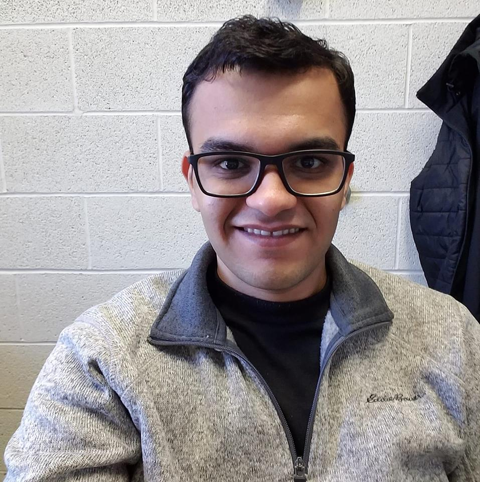

Shreyas Pai (श्रेयस पै)

I am a postdoctoral researcher in the Theory group at Aalto University hosted by Prof. Jara Uitto.
I received my PhD in Computer Science at The University of Iowa under the supervision of Prof. Sriram V. Pemmaraju in Spring 2021.
My research interests are primarily in Theory of Distributed and Parallel Computing, more specifically in Distributed Graph Algorithms and Algorithms for Large Data. I am also more generally interested in topics in Theoretical Computer Science like Communication Complexity and Combinatorial Optimization.
During my PhD, I worked as a research assistant in the Computational Epidemiology Group where we try to understand and model the spread of Hospital Acquired Infections (see here for more information).
Here is my CV. My ORCID: 0000-0003-2409-7807. And here are links to my arXiv and dblp pages.
Conference Papers
2023
| Title | Authors | Conference | Links |
|---|---|---|---|
| Conditionally Optimal Parallel Coloring of Forests | Christoph Grunau, Rustam Latypov, Yannic Maus, Shreyas Pai, Jara Uitto | DISC | to appear |
| Time and Space Optimal Massively Parallel Algorithm for the \(2\)-Ruling Set Problem | Melanie Cambus, Fabian Kuhn, Shreyas Pai, Jara Uitto | DISC | [arxiv] |
| Fast Dynamic Programming in Trees in the MPC Model | Chetan Gupta, Rustam Latypov, Yannic Maus, Shreyas Pai, Simo Särkkä, Jan Studený, Jukka Suomela, Jara Uitto, Hossein Vahidi | SPAA | [arxiv] |
| Sinkless Orientation Made Simple | Alkida Balliu, Janne H. Korhonen, Fabian Kuhn, Henrik Lievonen, Dennis Olivetti, Shreyas Pai, Ami Paz, Joel Rybicki, Stefan Schmid, Jan Studený, Jukka Suomela, Jara Uitto | SOSA | [arxiv] |
2022
2021
| Title | Authors | Conference | Links |
|---|---|---|---|
| Can we Break Symmetry with \(o(m)\) Communication? | Shreyas Pai, Gopal Pandurangan, Sriram V. Pemmaraju, and Peter Robinson | PODC | [arxiv] [video] |
| Risk-aware Temporal Cascade Reconstruction to Detect Asymptomatic Cases | Hankyu Jang, Shreyas Pai, Bijaya Adhikari, and Sriram V. Pemmaraju | ICDM | [paper] [code] |
2020
| Title | Authors | Conference | Links |
|---|---|---|---|
| Sample-and-Gather: Fast Ruling Set Algorithms in the Low-Memory MPC Model | Kishore Kothapalli, Shreyas Pai, Sriram V. Pemmaraju | FSTTCS | [arxiv] [video] |
| Connectivity Lower Bounds in Broadcast Congested Clique | Shreyas Pai, Sriram V. Pemmaraju | FSTTCS | [arxiv] [video] |
| Distributed Approximation on Power Graphs | Reuven Bar-Yehuda, Keren Censor-Hillel, Yannic Maus, Shreyas Pai, Sriram V. Pemmaraju | PODC | [arxiv] [video] |
2019
| Title | Authors | Conference | Links |
|---|---|---|---|
| A Constant Approximation for Colorful \(k\)-Center | Sayan Bandyapadhyay, Tanmay Inamdar, Shreyas Pai, Kasturi Varadarajan | ESA | [arxiv] |
| Spatiotemporal clustering of in-hospital Clostridioides difficile infection | Shreyas Pai, Philip Polgreen, Alberto Segre, Daniel Sewell, and Sriram V. Pemmaraju | ICHE | [paper] |
| Brief Announcement: Connectivity Lower Bounds in Broadcast Congested Clique | Shreyas Pai, Sriram V. Pemmaraju | PODC | [arxiv] [video] |
2018
| Title | Authors | Conference | Links |
|---|---|---|---|
| Large-Scale Distributed Algorithms for Facility Location with Outliers | Tanmay Inamdar, Shreyas Pai, Sriram V. Pemmaraju | OPODIS | [arxiv] |
| Near Optimal Clustering in the \(k\)-machine model | Sayan Bandyapadhyay, Tanmay Inamdar, Shreyas Pai, Sriram V. Pemmaraju | ICDCN | [arxiv] |
2017
| Title | Authors | Conference | Links |
|---|---|---|---|
| Symmetry Breaking in the Congest Model: Time– and Message–Efficient Algorithms for Ruling Sets | Shreyas Pai, Gopal Pandurangan, Sriram V. Pemmaraju, Talal Riaz, Peter Robinson | DISC | [arxiv] |
| Brief Announcement: Symmetry Breaking in the Congest Model: Time– and Message–Efficient Algorithms for Ruling Sets | Shreyas Pai, Gopal Pandurangan, Sriram V. Pemmaraju, Talal Riaz, Peter Robinson | PODC | [arxiv] |
Journal Papers
| Title | Authors | Journal | Year | Links |
|---|---|---|---|---|
| Risk-aware Temporal Cascade Reconstruction to Detect Asymptomatic Cases | Hankyu Jang, Shreyas Pai, Bijaya Adhikari, Sriram V. Pemmaraju | KAIS | 2022 | [paper] [code] |
| Near Optimal Clustering in the \(k\)-machine model | Sayan Bandyapadhyay, Tanmay Inamdar, Shreyas Pai, Sriram V. Pemmaraju | TCS | 2021 | [paper] |
Other Publications
| Title | Authors | Journal | Links |
|---|---|---|---|
| On the Role of Congestion in Distributed Complexity | Shreyas Pai | PhD Thesis 2021 | [paper] |
Teaching
- Fall 2021: TA for CS-E3190 Principles of Algorithmic Techniques
- Spring 2020: TA for CS:4330 Theory of Computation
- Spring 2017: Instructor for CS:3330 Algorithms, Section 2
- Fall 2016: TA for CS:1210 Computer Science 1: Fundamentals